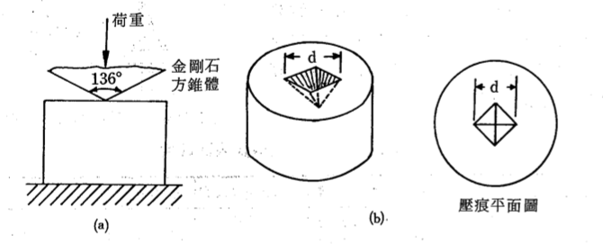
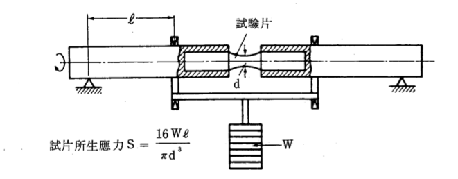
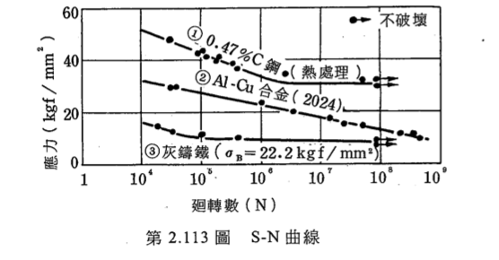

Mechanics Properties of Materials
以下是上一堂複習
Tensile Test：降伏點、抗拉強度、斷面縮率、伸長率、楊氏係數
Hardness Test：
- Brinell Hardness：HB
- Rockwell Hardness(最普遍)：分硬質與軟質。他的優點也是他的缺點，可以留下很少的痕跡就測硬度，但是只能測局部硬度。
Vickers Hardness
剛剛的硬度都有分「硬質」「軟質」，那有沒有一種硬度是軟硬皆適用的呢？這就是Vickers Hardness提出的動機了。
Vickers Hardness也是拿東西去壓東西，荷重有30kg, 50kg, 10kg，像這樣：
然後用公式算出硬度。
Vickers硬度的優點是，用不同規格的荷重下去量，他會得到一樣的結果。這個好處是他給各種東西一個通用的硬度標準， 不論東西軟硬。另外有種micro vickers，荷重可以小於1公斤，所以適用範圍很廣泛。不過機器也是貴很多。
Shore Hardness
這是一種與前幾種硬度測試都不太一樣的硬度測試，是用「東西反彈高度」判斷硬度的方法，東西彈越高，表示越硬。 不過這樣測問題有點多，首先是反彈的時候，未必是垂直的，所以同樣的材質，有可能反彈角度不一樣，測出來硬度就不一樣 。再來是這也會受到不同材質的楊氏係數影響。
聽起來這麼廢的硬度測試，使用的情況當然也是很無奈。比如說想要測船體硬度，然後就發現
硬度測試機變成船體的形狀了！船體太大，根本塞不進試驗機。這時候就只好勉強用一下Shore Hardness了。
以下是次上課內容
Impact Test衝擊試驗
一種測量材料HP有多少破壞需要多少機械能量的測試。這種性質叫做「韌性(Toughness)」。測量方法當然就是打他，像這樣：
把一個超大的重鎚拉起來，然後放下，材料就會被一拳秒殺斷掉(strain rate大概是 \(10^{3}\))，
然後測試重錘前後高度差，就可以知道破壞時花費多少能量。
這個試驗還有很多獵奇的測試方法，從最簡單的改變溫度，到泡酒、泡液態氮、泡各種奇怪的東西再去撞他都可以。
不過，最重要的還是溫度。金屬在低於一個溫度之後，就會變脆，這個溫度叫做「轉脆溫度」(Transition Temperature)， 所以被撞到就不會斷裂，而是凹下去。這在工程上就有很重要的意義， 比如說某輪船準備撞冰山時，如果轉脆溫度低一點，那撞到冰山船體就不會破裂進水，而是凹下去，就可以減少傷亡。
要注意的是，雖然跟拉伸試驗一樣都是破壞材料，但是在strain rate不同的情況下，材料會展現不同性質。 比如說瀝青。用力敲一下就碎，但是去拉伸試驗慢慢拉時可以拉很長～很長～很長。所以不能用strain rate低時做實驗， 推測strain rate 高的狀況
Fatigue Test疲勞測試
- 韌性(Toughness)
- 衝擊值(Impact Value)\(C_{v}\)
重複小幅度但是高頻率的來回拉伸，想也知道金屬最會就會被你搞得很累金屬疲勞，最後就斷掉。這種劇情在生活上很常見，我是說比如
蒸氣鍋爐，沸騰時會一直重複來回震盪，雖然不會有衝擊，也不會有人無聊對他做拉伸試驗，但是金屬疲勞就非常有可能。
講到測量金屬疲勞的方法要感謝神奇的材料力學，讓我們可以只在試片上面掛個重量，然後旋轉試片，就可以製造重複拉壓的效果，像這樣：
然後看一下要轉幾次材料才會金屬疲勞被拉斷。不過這個通常要坐很久(幾天之類的)。統計一下不同重量下旋轉週期數目可以得到：
有的金屬在一半就會變平的，表示荷重到一定程度之後，就有金屬疲勞而斷裂的危險，這個壓力叫做「疲勞限(Endurance limit)」。 有的金屬沒有下限，就通常就用\(10^7 ~ 10^8\)左右當作疲勞限。
Creep Test濳變測試
金屬之間慢慢移動。不過大概溫度大於熔點的一半時，才會有危險，所以比較少用。
Metallographic Test晶相測試
白話文：把金屬拋光，然後腐蝕他，再用顯微鏡看紋路。因為不同相之間會有不同程度的腐蝕，所以就形成不同的紋路， 藉此就可以看到金屬的microstructure。常用的腐蝕液有Nital與弗酸。詳細過程可以看課本。